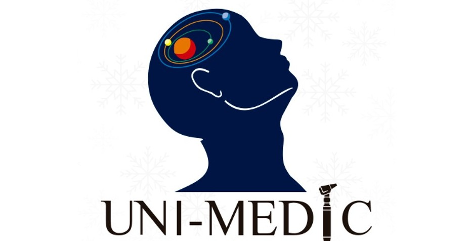
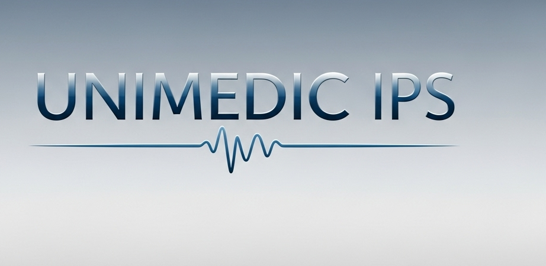

En Unimedic IPS trabajamos cada día con la convicción de que la salud es el mayor tesoro de las personas y de la
comunidad. Somos una institución prestadora de servicios de salud dedicada a brindar una atención integral, segura
y humanizada, donde la dignidad y el respeto son el centro de cada experiencia.
Nuestro compromiso va más allá de la atención médica: promovemos la prevención, acompañamos con empatía,
impulsamos la innovación tecnológica y fortalecemos la confianza de quienes depositan en nosotros su bienestar.
Contamos con un equipo humano altamente calificado, ético y comprometido, que une conocimiento científico y
sensibilidad social para garantizar servicios de calidad, oportunos y sostenibles. Además, trabajamos en armonía
con nuestro entorno, fomentando estilos de vida saludables y contribuyendo al desarrollo de la comunidad.
En Unimec IPS creemos en una atención cercana, transparente y confiable. Por eso te invitamos a explorar nuestras
secciones de Misión, Visión, Valores, Servicios, Quiénes somos y Contacto, donde descubrirás cómo transformamos el
cuidado de la salud en una experiencia cálida y significativa para ti y tu familia.


Misión
“Brindamos servicios de salud integrales, seguros, oportunos y centrados en la persona, sustentados en la mejor
evidencia científica y en un enfoque de equidad e inclusión. Contamos con un equipo humano competente, ético y
comprometido que ofrece atención cálida, humanizada y respetuosa de la dignidad de cada individuo.
Incorporamos tecnologías adecuadas e innovadoras para promover la prevención, el diagnóstico y el tratamiento con
calidad, contribuyendo al bienestar de la comunidad y fomentando estilos de vida saludables. Desarrollamos
investigación y docencia como ejes fundamentales para la mejora continua, fortaleciendo la colaboración
interdisciplinaria y el trabajo en red.
Actuamos con responsabilidad social y ambiental, asegurando una atención sostenible que aporte al desarrollo
integral de la sociedad.”
Visión
“Ser una IPS líder y referente en la región, el país y con proyección internacional, reconocida por la excelencia
de nuestros resultados clínicos, la experiencia humanizada y segura del paciente y la eficiencia de nuestra
gestión operativa. Consolidamos una cultura organizacional basada en la mejora continua, la innovación, la
transformación digital y la sostenibilidad, garantizando procesos transparentes, éticos y responsables con el
medio ambiente.
Aspiramos a ser un motor de transformación social en salud, promoviendo el acceso equitativo y oportuno a los
servicios, fortaleciendo la confianza de la comunidad y generando alianzas estratégicas que impulsen el desarrollo
social.
Nos proyectamos como un referente académico y científico, impulsando la investigación y la formación de talento
humano de excelencia, con vocación de servicio, compromiso ético y sensibilidad social.
De esta manera, contribuimos al bienestar integral y a la calidad de vida de las personas, fomentando estilos de
vida saludables y asegurando un impacto positivo, sostenible y duradero en la sociedad..”